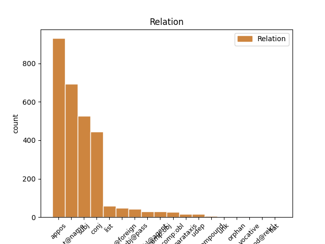
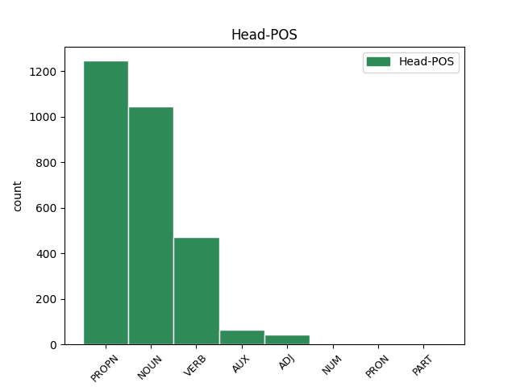
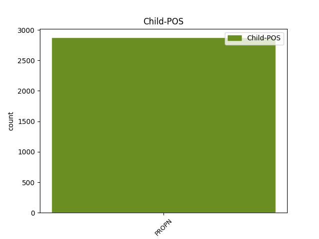

Distribution of features within this leaf



Agreement Rules sorted by frequency.
- When the dependent token is the flat multiword expression(flat@name) of the head token, and the dependent token is PROPN.
1 В _ _ _ _ 0 _ _ _
2 этом _ _ _ _ 0 _ _ _
3 же _ _ _ _ 0 _ _ _
4 матче _ _ _ _ 0 _ _ _
5 автором _ _ _ _ 0 _ _ _
6 первого _ _ _ _ 0 _ _ _
7 в _ _ _ _ 0 _ _ _
8 истории _ _ _ _ 0 _ _ _
9 гола _ _ _ _ 0 _ _ _
10 сборной _ _ _ _ 0 _ _ _
11 Украины _ _ _ _ 0 _ _ _
12 стал _ _ _ _ 0 _ _ _
13 другой _ _ _ _ 0 _ _ _
14 игрок _ _ _ _ 0 _ _ _
15 одесского _ _ _ _ 0 _ _ _
16 `` _ _ _ _ 0 _ _ _
17 Черноморца _ _ _ _ 0 _ _ _
18 '' _ _ _ _ 0 _ _ _
19 -- _ _ _ _ 0 _ _ _
20 Иван Иван PROPN NNP Animacy=Anim|Case=Nom|Gender=Masc|Number=Sing 0 _ _ _
21 Гецко Гецко PROPN NNP Animacy=Anim|Case=Nom|Gender=Masc|Number=Sing 20 flat@name _ SpaceAfter=No
22 . _ _ _ _ 0 _ _ _
1 По _ _ _ _ 0 _ _ _
2 старому _ _ _ _ 0 _ _ _
3 административному _ _ _ _ 0 _ _ _
4 делению _ _ _ _ 0 _ _ _
5 входил _ _ _ _ 0 _ _ _
6 в _ _ _ _ 0 _ _ _
7 провинцию провинция NOUN NN Animacy=Inan|Case=Acc|Gender=Fem|Number=Sing 0 _ _ _
8 Бейра Бейра PROPN NNP Animacy=Inan|Case=Nom|Gender=Fem|Number=Sing 7 appos _ SpaceAfter=No
9 - _ _ _ _ 0 _ _ _
10 Байша _ _ _ _ 0 _ _ _
11 . _ _ _ _ 0 _ _ _
1 В _ _ _ _ 0 _ _ _
2 звании _ _ _ _ 0 _ _ _
3 поглавника _ _ _ _ 0 _ _ _
4 Павелич Павелич PROPN NNP Animacy=Anim|Case=Nom|Gender=Masc|Number=Sing 5 subj _ _
5 сосредоточил сосредоточить VERB VBC Aspect=Perf|Gender=Masc|Mood=Ind|Number=Sing|Tense=Past|VerbForm=Fin|Voice=Act 0 _ _ _
6 всю _ _ _ _ 0 _ _ _
7 власть _ _ _ _ 0 _ _ _
8 в _ _ _ _ 0 _ _ _
9 своих _ _ _ _ 0 _ _ _
10 руках _ _ _ _ 0 _ _ _
11 и _ _ _ _ 0 _ _ _
12 способствовал _ _ _ _ 0 _ _ _
13 созданию _ _ _ _ 0 _ _ _
14 вокруг _ _ _ _ 0 _ _ _
15 себя _ _ _ _ 0 _ _ _
16 культа _ _ _ _ 0 _ _ _
17 личности _ _ _ _ 0 _ _ _
18 . _ _ _ _ 0 _ _ _
1 Этот _ _ _ _ 0 _ _ _
2 совет _ _ _ _ 0 _ _ _
3 даже _ _ _ _ 0 _ _ _
4 официально _ _ _ _ 0 _ _ _
5 рассматривался _ _ _ _ 0 _ _ _
6 , _ _ _ _ 0 _ _ _
7 как _ _ _ _ 0 _ _ _
8 заседание _ _ _ _ 0 _ _ _
9 архиереев _ _ _ _ 0 _ _ _
10 Испании Испания PROPN NNP Animacy=Inan|Case=Gen|Gender=Fem|Number=Sing 0 _ _ _
11 и _ _ _ _ 0 _ _ _
12 Галлии Галлия PROPN NNP Animacy=Inan|Case=Gen|Gender=Fem|Number=Sing 10 conj _ SpaceAfter=No
13 , _ _ _ _ 0 _ _ _
14 в _ _ _ _ 0 _ _ _
15 отличие _ _ _ _ 0 _ _ _
16 от _ _ _ _ 0 _ _ _
17 предыдущего _ _ _ _ 0 _ _ _
18 , _ _ _ _ 0 _ _ _
19 представленного _ _ _ _ 0 _ _ _
20 как _ _ _ _ 0 _ _ _
21 встреча _ _ _ _ 0 _ _ _
22 епископов _ _ _ _ 0 _ _ _
23 `` _ _ _ _ 0 _ _ _
24 различных _ _ _ _ 0 _ _ _
25 провинций _ _ _ _ 0 _ _ _
26 Испании _ _ _ _ 0 _ _ _
27 '' _ _ _ _ 0 _ _ _
28 . _ _ _ _ 0 _ _ _
1 За _ _ _ _ 0 _ _ _
2 эту _ _ _ _ 0 _ _ _
3 роль _ _ _ _ 0 _ _ _
4 Финч Финч PROPN NNP Animacy=Anim|Case=Nom|Gender=Masc|Number=Sing 5 subj@pass _ _
5 был быть AUX VBC Aspect=Imp|Gender=Masc|Mood=Ind|Number=Sing|Tense=Past|VerbForm=Fin 0 _ _ _
6 посмертно _ _ _ _ 0 _ _ _
7 награждён _ _ _ _ 0 _ _ _
8 `` _ _ _ _ 0 _ _ _
9 Оскаром _ _ _ _ 0 _ _ _
10 '' _ _ _ _ 0 _ _ _
11 , _ _ _ _ 0 _ _ _
12 который _ _ _ _ 0 _ _ _
13 получила _ _ _ _ 0 _ _ _
14 его _ _ _ _ 0 _ _ _
15 вдова _ _ _ _ 0 _ _ _
16 Элета _ _ _ _ 0 _ _ _
17 . _ _ _ _ 0 _ _ _
1 По _ _ _ _ 0 _ _ _
2 старому _ _ _ _ 0 _ _ _
3 административному _ _ _ _ 0 _ _ _
4 делению _ _ _ _ 0 _ _ _
5 входил _ _ _ _ 0 _ _ _
6 в _ _ _ _ 0 _ _ _
7 провинцию _ _ _ _ 0 _ _ _
8 Бейра Бейра PROPN NNP Animacy=Inan|Case=Nom|Gender=Fem|Number=Sing 0 _ _ _
9 - _ _ _ _ 0 _ _ _
10 Байша Байша PROPN NNP Animacy=Inan|Case=Nom|Gender=Fem|Number=Sing 8 flat@foreign _ SpaceAfter=No
11 . _ _ _ _ 0 _ _ _
1 Серге́й _ _ _ _ 0 _ _ _
2 Евге́ньевич _ _ _ _ 0 _ _ _
3 Супо́нев _ _ _ _ 0 _ _ _
4 ( _ _ _ _ 0 _ _ _
5 28 _ _ _ _ 0 _ _ _
6 января _ _ _ _ 0 _ _ _
7 1963 _ _ _ _ 0 _ _ _
8 , _ _ _ _ 0 _ _ _
9 Хотьково _ _ _ _ 0 _ _ _
10 , _ _ _ _ 0 _ _ _
11 Московская _ _ _ _ 0 _ _ _
12 область _ _ _ _ 0 _ _ _
13 -- _ _ _ _ 0 _ _ _
14 8 8 ADJ ORD Case=Gen|Degree=Pos|Gender=Neut|Number=Sing 0 _ _ _
15 декабря _ _ _ _ 0 _ _ _
16 2001 _ _ _ _ 0 _ _ _
17 , _ _ _ _ 0 _ _ _
18 Едимоново Едимоново PROPN NNP Animacy=Inan|Case=Nom|Gender=Neut|Number=Sing 14 list _ SpaceAfter=No
19 , _ _ _ _ 0 _ _ _
20 Тверская _ _ _ _ 0 _ _ _
21 область _ _ _ _ 0 _ _ _
22 ) _ _ _ _ 0 _ _ _
23 -- _ _ _ _ 0 _ _ _
24 советский _ _ _ _ 0 _ _ _
25 и _ _ _ _ 0 _ _ _
26 российский _ _ _ _ 0 _ _ _
27 , _ _ _ _ 0 _ _ _
28 руководитель _ _ _ _ 0 _ _ _
29 дирекции _ _ _ _ 0 _ _ _
30 детских _ _ _ _ 0 _ _ _
31 программ _ _ _ _ 0 _ _ _
32 ОРТ _ _ _ _ 0 _ _ _
33 ( _ _ _ _ 0 _ _ _
34 1997 _ _ _ _ 0 _ _ _
35 -- _ _ _ _ 0 _ _ _
36 2001 _ _ _ _ 0 _ _ _
37 ) _ _ _ _ 0 _ _ _
38 . _ _ _ _ 0 _ _ _
1 Закончил закончить VERB VBC Aspect=Perf|Gender=Masc|Mood=Ind|Number=Sing|Tense=Past|VerbForm=Fin|Voice=Act 0 _ _ _
2 СПбГУ Спбгу PROPN NNP Animacy=Inan|Case=Acc|Gender=Masc|Number=Sing 1 comp:obj _ _
3 ( _ _ _ _ 0 _ _ _
4 Восточный _ _ _ _ 0 _ _ _
5 факультет _ _ _ _ 0 _ _ _
6 , _ _ _ _ 0 _ _ _
7 кафедра _ _ _ _ 0 _ _ _
8 иранской _ _ _ _ 0 _ _ _
9 филологии _ _ _ _ 0 _ _ _
10 ) _ _ _ _ 0 _ _ _
11 в _ _ _ _ 0 _ _ _
12 1920 _ _ _ _ 0 _ _ _
13 году _ _ _ _ 0 _ _ _
14 . _ _ _ _ 0 _ _ _
1 Петерсом Петерс PROPN NNP Animacy=Anim|Case=Ins|Gender=Masc|Number=Sing 7 comp:obl@agent _ _
2 в _ _ _ _ 0 _ _ _
3 Клинтоне _ _ _ _ 0 _ _ _
4 , _ _ _ _ 0 _ _ _
5 США _ _ _ _ 0 _ _ _
6 и _ _ _ _ 0 _ _ _
7 назван назвать VERB VBNH Animacy=Inan|Aspect=Perf|Case=Nom|Gender=Masc|Number=Sing|Tense=Past|Variant=Short|VerbForm=Part|Voice=Pass 0 _ _ _
8 по _ _ _ _ 0 _ _ _
9 имени _ _ _ _ 0 _ _ _
10 пророчицы _ _ _ _ 0 _ _ _
11 Вельвы _ _ _ _ 0 _ _ _
12 в _ _ _ _ 0 _ _ _
13 скандинавской _ _ _ _ 0 _ _ _
14 мифологии _ _ _ _ 0 _ _ _
15 . _ _ _ _ 0 _ _ _
1 За _ _ _ _ 0 _ _ _
2 эту _ _ _ _ 0 _ _ _
3 роль _ _ _ _ 0 _ _ _
4 Финч _ _ _ _ 0 _ _ _
5 был _ _ _ _ 0 _ _ _
6 посмертно _ _ _ _ 0 _ _ _
7 награждён наградить VERB VBNH Animacy=Anim|Aspect=Perf|Case=Nom|Gender=Masc|Number=Sing|Tense=Past|Variant=Short|VerbForm=Part|Voice=Pass 0 _ _ _
8 `` _ _ _ _ 0 _ _ _
9 Оскаром Оскар PROPN NNP Animacy=Anim|Case=Ins|Gender=Masc|Number=Sing 7 comp:obl _ SpaceAfter=No
10 '' _ _ _ _ 0 _ _ _
11 , _ _ _ _ 0 _ _ _
12 который _ _ _ _ 0 _ _ _
13 получила _ _ _ _ 0 _ _ _
14 его _ _ _ _ 0 _ _ _
15 вдова _ _ _ _ 0 _ _ _
16 Элета _ _ _ _ 0 _ _ _
17 . _ _ _ _ 0 _ _ _
1 Занимался заниматься VERB VBC Aspect=Imp|Gender=Masc|Mood=Ind|Number=Sing|Tense=Past|VerbForm=Fin|Voice=Mid 0 _ _ _
2 у _ _ _ _ 0 _ _ _
3 Бориса Борис PROPN NNP Animacy=Anim|Case=Gen|Gender=Masc|Number=Sing 1 udep _ _
4 Фогеля _ _ _ _ 0 _ _ _
5 , _ _ _ _ 0 _ _ _
6 Леонида _ _ _ _ 0 _ _ _
7 Овсянникова _ _ _ _ 0 _ _ _
8 , _ _ _ _ 0 _ _ _
9 Лии _ _ _ _ 0 _ _ _
10 Островой _ _ _ _ 0 _ _ _
11 , _ _ _ _ 0 _ _ _
12 Александра _ _ _ _ 0 _ _ _
13 Деблера _ _ _ _ 0 _ _ _
14 , _ _ _ _ 0 _ _ _
15 Александра _ _ _ _ 0 _ _ _
16 Зайцева _ _ _ _ 0 _ _ _
17 . _ _ _ _ 0 _ _ _
1 Доктор доктор NOUN NN Animacy=Anim|Case=Nom|Gender=Masc|Number=Sing 0 _ _ _
2 Генри _ _ _ _ 0 _ _ _
3 Джонатан _ _ _ _ 0 _ _ _
4 Пим _ _ _ _ 0 _ _ _
5 ( _ _ _ _ 0 _ _ _
6 ) _ _ _ _ 0 _ _ _
7 , _ _ _ _ 0 _ _ _
8 он _ _ _ _ 0 _ _ _
9 же _ _ _ _ 0 _ _ _
10 Хэнк Хэнк PROPN NNP Animacy=Anim|Case=Nom|Gender=Masc|Number=Sing 1 parataxis _ _
11 Пим _ _ _ _ 0 _ _ _
12 ( _ _ _ _ 0 _ _ _
13 ) _ _ _ _ 0 _ _ _
14 -- _ _ _ _ 0 _ _ _
15 вымышленный _ _ _ _ 0 _ _ _
16 персонаж _ _ _ _ 0 _ _ _
17 комиксов _ _ _ _ 0 _ _ _
18 компании _ _ _ _ 0 _ _ _
19 Marvel _ _ _ _ 0 _ _ _
20 Comics _ _ _ _ 0 _ _ _
21 . _ _ _ _ 0 _ _ _
1 Путиным Путин PROPN NNP Animacy=Anim|Case=Ins|Gender=Masc|Number=Sing 13 unk _ _
2 15 _ _ _ _ 0 _ _ _
3 декабря _ _ _ _ 0 _ _ _
4 2011 _ _ _ _ 0 _ _ _
5 года _ _ _ _ 0 _ _ _
6 один _ _ _ _ 0 _ _ _
7 из _ _ _ _ 0 _ _ _
8 приморских _ _ _ _ 0 _ _ _
9 бизнесменов _ _ _ _ 0 _ _ _
10 в _ _ _ _ 0 _ _ _
11 прямом _ _ _ _ 0 _ _ _
12 эфире _ _ _ _ 0 _ _ _
13 раскритиковал раскритиковать VERB VBC Aspect=Perf|Gender=Masc|Mood=Ind|Number=Sing|Tense=Past|VerbForm=Fin|Voice=Act 0 _ _ _
14 Дарькина _ _ _ _ 0 _ _ _
15 . _ _ _ _ 0 _ _ _
1 В _ _ _ _ 0 _ _ _
2 городе _ _ _ _ 0 _ _ _
3 вещают _ _ _ _ 0 _ _ _
4 7 _ _ _ _ 0 _ _ _
5 радиостанций _ _ _ _ 0 _ _ _
6 в _ _ _ _ 0 _ _ _
7 FM FM PROPN NNP Animacy=Inan|Case=Loc|Gender=Masc|Number=Sing 8 compound _ _
8 диапазоне диапазон NOUN NN Animacy=Inan|Case=Loc|Gender=Masc|Number=Sing 0 _ _ _
1 На _ _ _ _ 0 _ _ _
2 противоположной _ _ _ _ 0 _ _ _
3 стороне _ _ _ _ 0 _ _ _
4 , _ _ _ _ 0 _ _ _
5 также _ _ _ _ 0 _ _ _
6 на _ _ _ _ 0 _ _ _
7 высокой _ _ _ _ 0 _ _ _
8 горе _ _ _ _ 0 _ _ _
9 , _ _ _ _ 0 _ _ _
10 располагалось _ _ _ _ 0 _ _ _
11 старинное _ _ _ _ 0 _ _ _
12 село _ _ _ _ 0 _ _ _
13 Соколово соколово PROPN NNP Animacy=Inan|Case=Nom|Gender=Neut|Number=Sing 0 _ _ _
14 - _ _ _ _ 0 _ _ _
15 Мещерское Мещерское PROPN NNP Animacy=Inan|Case=Nom|Gender=Neut|Number=Sing 13 flat _ SpaceAfter=No
16 , _ _ _ _ 0 _ _ _
17 проехать _ _ _ _ 0 _ _ _
18 к _ _ _ _ 0 _ _ _
19 которому _ _ _ _ 0 _ _ _
20 можно _ _ _ _ 0 _ _ _
21 было _ _ _ _ 0 _ _ _
22 только _ _ _ _ 0 _ _ _
23 через _ _ _ _ 0 _ _ _
24 Куркино _ _ _ _ 0 _ _ _
25 . _ _ _ _ 0 _ _ _
1 Бутафор бутафор NOUN NN Animacy=Anim|Case=Nom|Gender=Masc|Number=Sing 0 _ _ _
2 , _ _ _ _ 0 _ _ _
3 Иван Иван PROPN NNP Animacy=Anim|Case=Nom|Gender=Masc|Number=Sing 1 vocative _ _
4 Васильевич _ _ _ _ 0 _ _ _
5 ! _ _ _ _ 0 _ _ _
6 -- _ _ _ _ 0 _ _ _
7 застонал _ _ _ _ 0 _ _ _
8 Фома _ _ _ _ 0 _ _ _
9 , _ _ _ _ 0 _ _ _
10 а _ _ _ _ 0 _ _ _
11 Иван _ _ _ _ 0 _ _ _
12 Васильевич _ _ _ _ 0 _ _ _
13 утих _ _ _ _ 0 _ _ _
14 , _ _ _ _ 0 _ _ _
15 а _ _ _ _ 0 _ _ _
16 бутафора _ _ _ _ 0 _ _ _
17 выпустили _ _ _ _ 0 _ _ _
18 с _ _ _ _ 0 _ _ _
19 миром _ _ _ _ 0 _ _ _
20 . _ _ _ _ 0 _ _ _
1 Актёры _ _ _ _ 0 _ _ _
2 все _ _ _ _ 0 _ _ _
3 те _ _ _ _ 0 _ _ _
4 же _ _ _ _ 0 _ _ _
5 , _ _ _ _ 0 _ _ _
6 только _ _ _ _ 0 _ _ _
7 роли _ _ _ _ 0 _ _ _
8 Джеки _ _ _ _ 0 _ _ _
9 Чана _ _ _ _ 0 _ _ _
10 , _ _ _ _ 0 _ _ _
11 Дэвида _ _ _ _ 0 _ _ _
12 Кросса _ _ _ _ 0 _ _ _
13 и _ _ _ _ 0 _ _ _
14 Люси _ _ _ _ 0 _ _ _
15 Лью _ _ _ _ 0 _ _ _
16 ( _ _ _ _ 0 _ _ _
17 то _ _ _ _ 0 _ _ _
18 есть _ _ _ _ 0 _ _ _
19 Обезьяна _ _ _ _ 0 _ _ _
20 , _ _ _ _ 0 _ _ _
21 Журавль _ _ _ _ 0 _ _ _
22 и _ _ _ _ 0 _ _ _
23 Гадюка _ _ _ _ 0 _ _ _
24 ) _ _ _ _ 0 _ _ _
25 были _ _ _ _ 0 _ _ _
26 удалены _ _ _ _ 0 _ _ _
27 , _ _ _ _ 0 _ _ _
28 и _ _ _ _ 0 _ _ _
29 также _ _ _ _ 0 _ _ _
30 Виктор _ _ _ _ 0 _ _ _
31 Гарбер _ _ _ _ 0 _ _ _
32 был _ _ _ _ 0 _ _ _
33 заменён заменить VERB VBNH Animacy=Anim|Aspect=Perf|Case=Nom|Gender=Masc|Number=Sing|Tense=Past|Variant=Short|VerbForm=Part|Voice=Pass 0 _ _ _
34 Паулем _ _ _ _ 0 _ _ _
35 Шеером _ _ _ _ 0 _ _ _
36 , _ _ _ _ 0 _ _ _
37 а _ _ _ _ 0 _ _ _
38 Жан _ _ _ _ 0 _ _ _
39 - _ _ _ _ 0 _ _ _
40 Клод _ _ _ _ 0 _ _ _
41 Ван _ _ _ _ 0 _ _ _
42 Дамм _ _ _ _ 0 _ _ _
43 -- _ _ _ _ 0 _ _ _
44 Энтони Энтони PROPN NNP Animacy=Anim|Case=Ins|Gender=Masc|Number=Sing 33 orphan _ _
45 Леондисом _ _ _ _ 0 _ _ _
46 . _ _ _ _ 0 _ _ _
Disagree Examples:
1 Во _ _ _ _ 0 _ _ _
2 время _ _ _ _ 0 _ _ _
3 битвы _ _ _ _ 0 _ _ _
4 между _ _ _ _ 0 _ _ _
5 силами _ _ _ _ 0 _ _ _
6 Магнето _ _ _ _ 0 _ _ _
7 и _ _ _ _ 0 _ _ _
8 героями _ _ _ _ 0 _ _ _
9 , _ _ _ _ 0 _ _ _
10 кто _ _ _ _ 0 _ _ _
11 восстановил _ _ _ _ 0 _ _ _
12 свои _ _ _ _ 0 _ _ _
13 воспоминания _ _ _ _ 0 _ _ _
14 , _ _ _ _ 0 _ _ _
15 мутант мутант NOUN NN Animacy=Anim|Case=Nom|Gender=Masc|Number=Sing 0 _ _ _
16 Лайла Лайла PROPN NNP Animacy=Anim|Case=Nom|Gender=Fem|Number=Sing 15 appos _ _
17 Миллер _ _ _ _ 0 _ _ _
18 смогла _ _ _ _ 0 _ _ _
19 восстановить _ _ _ _ 0 _ _ _
20 воспоминания _ _ _ _ 0 _ _ _
21 Магнето _ _ _ _ 0 _ _ _
22 об _ _ _ _ 0 _ _ _
23 оригинальной _ _ _ _ 0 _ _ _
24 реальности _ _ _ _ 0 _ _ _
25 . _ _ _ _ 0 _ _ _
1 Позже _ _ _ _ 0 _ _ _
2 вышел _ _ _ _ 0 _ _ _
3 имеющий _ _ _ _ 0 _ _ _
4 силу _ _ _ _ 0 _ _ _
5 Закона _ _ _ _ 0 _ _ _
6 Указ _ _ _ _ 0 _ _ _
7 Президента _ _ _ _ 0 _ _ _
8 Республики республика NOUN NN Animacy=Inan|Case=Gen|Gender=Fem|Number=Sing 0 _ _ _
9 Казахстан Казахстан PROPN NNP Animacy=Inan|Case=Nom|Gender=Masc|Number=Sing 8 appos _ _
10 от _ _ _ _ 0 _ _ _
11 15 _ _ _ _ 0 _ _ _
12 сентября _ _ _ _ 0 _ _ _
13 1995 _ _ _ _ 0 _ _ _
14 г _ _ _ _ 0 _ _ _
15 . _ _ _ _ 0 _ _ _
1 Фрэ́нсис _ _ _ _ 0 _ _ _
2 Бэй _ _ _ _ 0 _ _ _
3 ( _ _ _ _ 0 _ _ _
4 ) _ _ _ _ 0 _ _ _
5 , _ _ _ _ 0 _ _ _
6 в _ _ _ _ 0 _ _ _
7 девичестве _ _ _ _ 0 _ _ _
8 -- _ _ _ _ 0 _ _ _
9 Го́ффман _ _ _ _ 0 _ _ _
10 ( _ _ _ _ 0 _ _ _
11 ; _ _ _ _ 0 _ _ _
12 23 23 ADJ ORD Case=Nom|Degree=Pos|Gender=Neut|Number=Sing 0 _ _ _
13 января _ _ _ _ 0 _ _ _
14 1919 _ _ _ _ 0 _ _ _
15 `` _ _ _ _ 0 _ _ _
16 Альберта Альберта PROPN NNP Animacy=Inan|Case=Nom|Gender=Fem|Number=Sing 12 list _ SpaceAfter=No
17 , _ _ _ _ 0 _ _ _
18 Канада _ _ _ _ 0 _ _ _
19 -- _ _ _ _ 0 _ _ _
20 15 _ _ _ _ 0 _ _ _
21 сентября _ _ _ _ 0 _ _ _
22 2011 _ _ _ _ 0 _ _ _
23 `` _ _ _ _ 0 _ _ _
24 Лос-Анджелес _ _ _ _ 0 _ _ _
25 , _ _ _ _ 0 _ _ _
26 Калифорния _ _ _ _ 0 _ _ _
27 , _ _ _ _ 0 _ _ _
28 США _ _ _ _ 0 _ _ _
29 ) _ _ _ _ 0 _ _ _
30 -- _ _ _ _ 0 _ _ _
31 канадо-американская _ _ _ _ 0 _ _ _
32 актриса _ _ _ _ 0 _ _ _
33 . _ _ _ _ 0 _ _ _
1 Фрэ́нсис _ _ _ _ 0 _ _ _
2 Бэй _ _ _ _ 0 _ _ _
3 ( _ _ _ _ 0 _ _ _
4 ) _ _ _ _ 0 _ _ _
5 , _ _ _ _ 0 _ _ _
6 в _ _ _ _ 0 _ _ _
7 девичестве _ _ _ _ 0 _ _ _
8 -- _ _ _ _ 0 _ _ _
9 Го́ффман _ _ _ _ 0 _ _ _
10 ( _ _ _ _ 0 _ _ _
11 ; _ _ _ _ 0 _ _ _
12 23 23 ADJ ORD Case=Nom|Degree=Pos|Gender=Neut|Number=Sing 0 _ _ _
13 января _ _ _ _ 0 _ _ _
14 1919 _ _ _ _ 0 _ _ _
15 `` _ _ _ _ 0 _ _ _
16 Альберта _ _ _ _ 0 _ _ _
17 , _ _ _ _ 0 _ _ _
18 Канада Канада PROPN NNP Animacy=Inan|Case=Nom|Gender=Fem|Number=Sing 12 list _ _
19 -- _ _ _ _ 0 _ _ _
20 15 _ _ _ _ 0 _ _ _
21 сентября _ _ _ _ 0 _ _ _
22 2011 _ _ _ _ 0 _ _ _
23 `` _ _ _ _ 0 _ _ _
24 Лос-Анджелес _ _ _ _ 0 _ _ _
25 , _ _ _ _ 0 _ _ _
26 Калифорния _ _ _ _ 0 _ _ _
27 , _ _ _ _ 0 _ _ _
28 США _ _ _ _ 0 _ _ _
29 ) _ _ _ _ 0 _ _ _
30 -- _ _ _ _ 0 _ _ _
31 канадо-американская _ _ _ _ 0 _ _ _
32 актриса _ _ _ _ 0 _ _ _
33 . _ _ _ _ 0 _ _ _
1 Фрэ́нсис _ _ _ _ 0 _ _ _
2 Бэй _ _ _ _ 0 _ _ _
3 ( _ _ _ _ 0 _ _ _
4 ) _ _ _ _ 0 _ _ _
5 , _ _ _ _ 0 _ _ _
6 в _ _ _ _ 0 _ _ _
7 девичестве _ _ _ _ 0 _ _ _
8 -- _ _ _ _ 0 _ _ _
9 Го́ффман _ _ _ _ 0 _ _ _
10 ( _ _ _ _ 0 _ _ _
11 ; _ _ _ _ 0 _ _ _
12 23 _ _ _ _ 0 _ _ _
13 января _ _ _ _ 0 _ _ _
14 1919 _ _ _ _ 0 _ _ _
15 `` _ _ _ _ 0 _ _ _
16 Альберта _ _ _ _ 0 _ _ _
17 , _ _ _ _ 0 _ _ _
18 Канада _ _ _ _ 0 _ _ _
19 -- _ _ _ _ 0 _ _ _
20 15 15 ADJ ORD Case=Nom|Degree=Pos|Gender=Neut|Number=Sing 0 _ _ _
21 сентября _ _ _ _ 0 _ _ _
22 2011 _ _ _ _ 0 _ _ _
23 `` _ _ _ _ 0 _ _ _
24 Лос-Анджелес Лос-Анджелес PROPN NNP Animacy=Inan|Case=Nom|Gender=Masc|Number=Sing 20 list _ SpaceAfter=No
25 , _ _ _ _ 0 _ _ _
26 Калифорния _ _ _ _ 0 _ _ _
27 , _ _ _ _ 0 _ _ _
28 США _ _ _ _ 0 _ _ _
29 ) _ _ _ _ 0 _ _ _
30 -- _ _ _ _ 0 _ _ _
31 канадо-американская _ _ _ _ 0 _ _ _
32 актриса _ _ _ _ 0 _ _ _
33 . _ _ _ _ 0 _ _ _